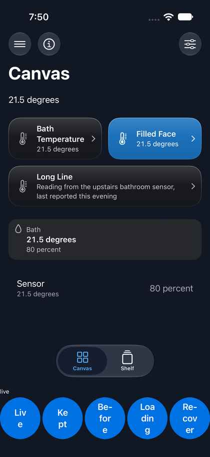
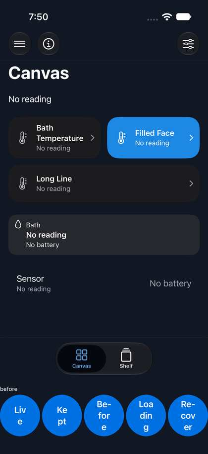
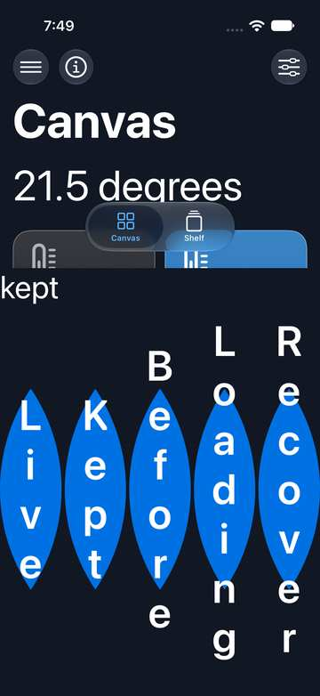
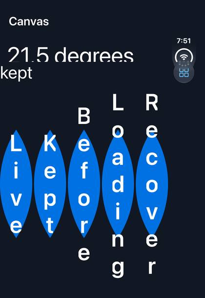
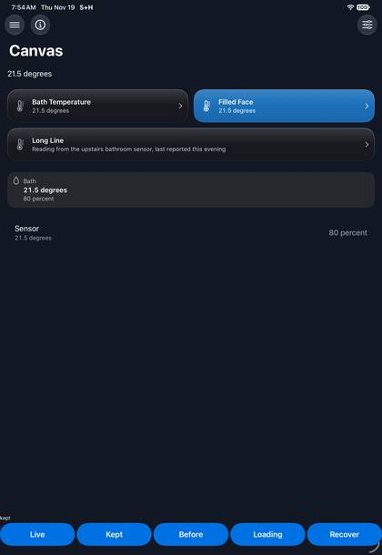

Proposal · 2026-11-19 · decided: owner picked A, 2026-11-19 · T-text-keep · branch port/text-keep
The Studio can ask a text slot to keep its last reading when the sensor behind it goes unavailable (sh.text-keep@1). Three treatments were built behind one switch and captured on iPhone, Duo and iPad. The owner picked A: kept text looks and sounds exactly like a live value. Only A ships; the record is kept-text.md and the atlas page is Kept text.
Judged A, B and C; the owner picked A, plain, after seeing all three with screenshots, because kept text should look and sound exactly like a live value: no glyph, no colour change, no VoiceOver change. Before any answer a keep slot draws its fallback, never the loading look.
"The visible question: while a slot is showing a kept value because the source is unavailable, does it look different from a live value, and how? Examples: no difference, a subtle staleness treatment, or an accessibility-only cue in the VoiceOver value or hint."
whenUnavailable: "keep" whose source reads unavailable after at least one answer keeps drawing that last answer ("kept").Kept draws and speaks exactly like live. No glyph, no colour, no VoiceOver change.
Looks exactly like A. VoiceOver appends ", last known" to the element's value, once per element.
B's cue, plus a leading clock.arrow.circlepath glyph and, on neutral ink, the grey unavailable tiles already use.
Designer's lean was C (a reading that may be hours old should not look current to anyone; C reused the unavailable grey with a glyph so it never relied on colour alone). Overridden by the owner, who picked A. The A, B and C captures stay outside the repo in build/evidence/claude-text-keep/abc-archive/.
Kept is the same frame as live: the journey asserts the same label, value, glyph count and frame height on every host, and a pixel diff differs only in the gallery's state label.





| Family and pose | A | Note |
|---|---|---|
| iPhone portrait | default, AX5, contrast | 4 KeptTextJourneyTests pass |
| Duo folded | default, AX5 | outer panel |
| iPad portrait, landscape | default, AX5 | landscape captures rotated (known) |
| Duo unfolded portrait, landscape, partial fold; rotate-in and out | not run | infra: the inner capture came back black; no rotating journey on this surface |